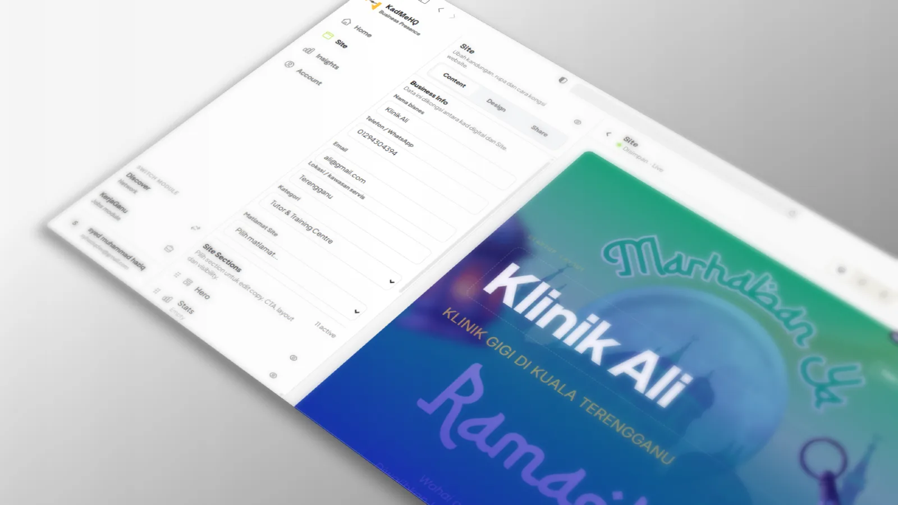
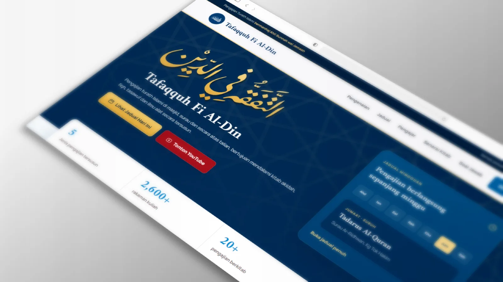
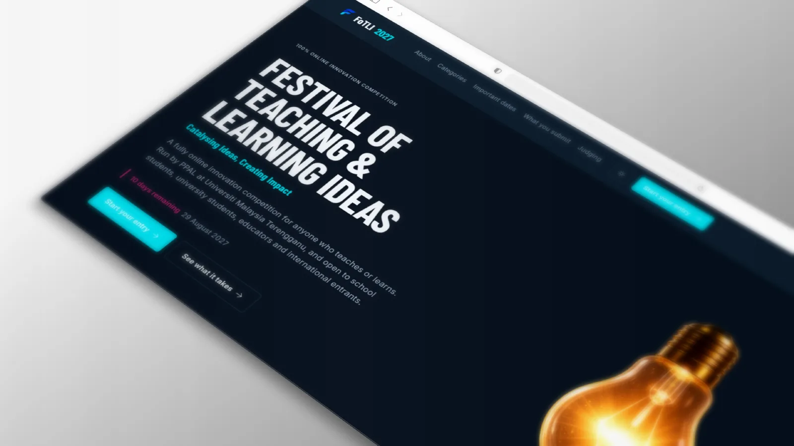

Many small businesses need a website, but starting from a blank template can be confusing and slow.
Work that shows the range.
A closer look at the projects behind the homepage: my own product, Oxford EduVision platform work, and Unity learning games. These are case notes, not inflated case studies. Results will be added only when there is real evidence.
KadMeHQ
KadMeHQ is my own product: a Laravel-based website and digital profile builder for Malaysian SMEs. The product is still improving over time, so this case note is focused on the thinking and build direction, not on user-result claims.

KadMeHQ is built around automatic business layouts, so users can move faster from profile details to a usable page.
Founder, product thinker and developer: planning the product, shaping the UI and building the platform.
Live product, actively improved. Real user outcomes and stronger metrics will be added when available.
Tafaqquh Fi Al-Din
Tafaqquh helps people learn Islamic turath content for free through structured levels, teachers and recorded lessons. It also includes Tanya Ustaz, a Q&A route where public questions and answers can grow over time.

Turath learning needs a clear digital structure so learners can follow material by stage instead of browsing randomly.
The platform organises lessons, series and teachers into a clearer learning path for public access.
Developed at Oxford EduVision, with credit kept to the company context rather than personal ownership.
Tanya Ustaz lets visitors read and submit religion-related questions, with answers reviewed before publication.
FoTLI
FoTLI is an online innovation competition platform built under Oxford EduVision for UMT. The current portfolio slot uses the public-facing screenshot, with room to add app-view screenshots later.

Competition programmes need a clear digital place for information, submissions, judging and event flow.
Build the public site and platform workflow around the competition's practical needs.
Sole developer under Oxford EduVision.
Add app-view screenshots and more workflow detail when shareable material is approved.
Learning games
Beyond web platforms, I build Unity-based educational games. These projects show a wider range of interaction thinking: missions, puzzles, group play, 1v1 modes and leaderboard loops.

EduGC 2025 Professional Category Winner
Misi Sejarah 3D
A 3D educational game for Malaysian history learning. Built as a solo development effort, with a leaderboard loop added to support replay and comparison.

Sirah Explorer
A sirah-themed word puzzle game with 24 levels, group play, 1v1 mode and leaderboard support. Built to make religious learning more interactive.
Also contributed to
Want this kind of clarity for your site?
Send the project basics and I will help shape the offer, structure and first useful version.